무엇이 다르게 느껴졌나요?
B가 A보다 향이 더 강하게 느껴진다.
아마, 이런 장면.
맞습니다. 이것도 맥주입니다.
맥주는 한 장면보다 넓습니다.
오늘, 여섯 잔으로 그 세계의 입구를 엽니다.
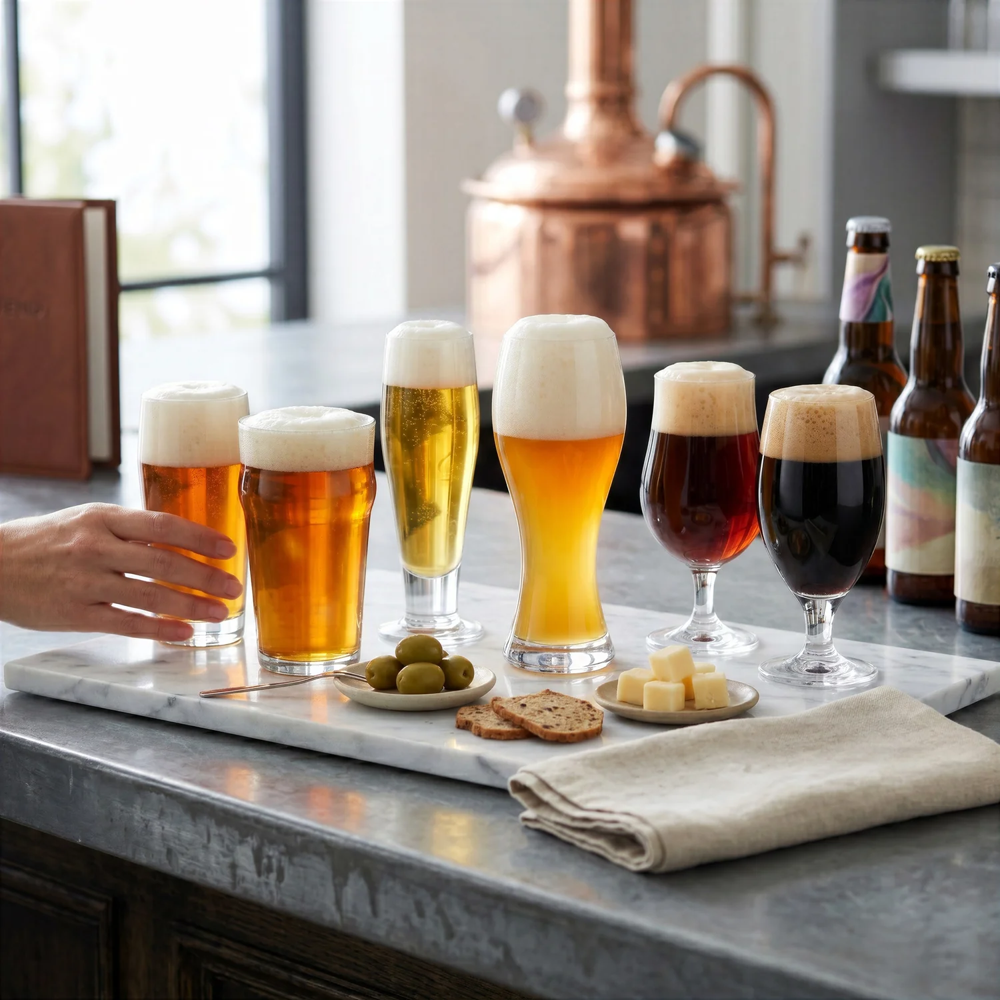
YOUR GUIDE
맥주를 읽고, 가르치고, 연결합니다.
TASTE → TEACH → JUDGE → BUILD
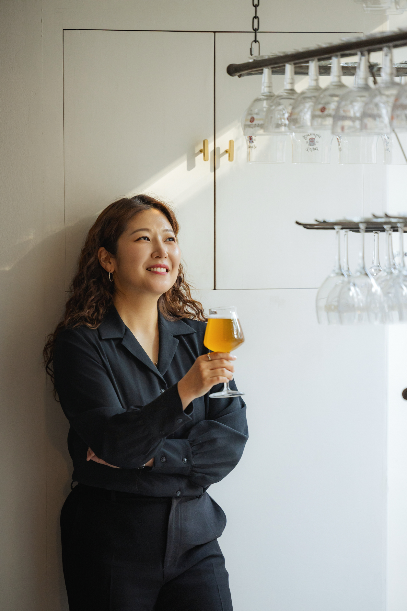
FERMENTED GHOST · SEASON 1
We curated beer experiences.
한 잔을 감각 · 상황 · 사람과 연결했습니다.
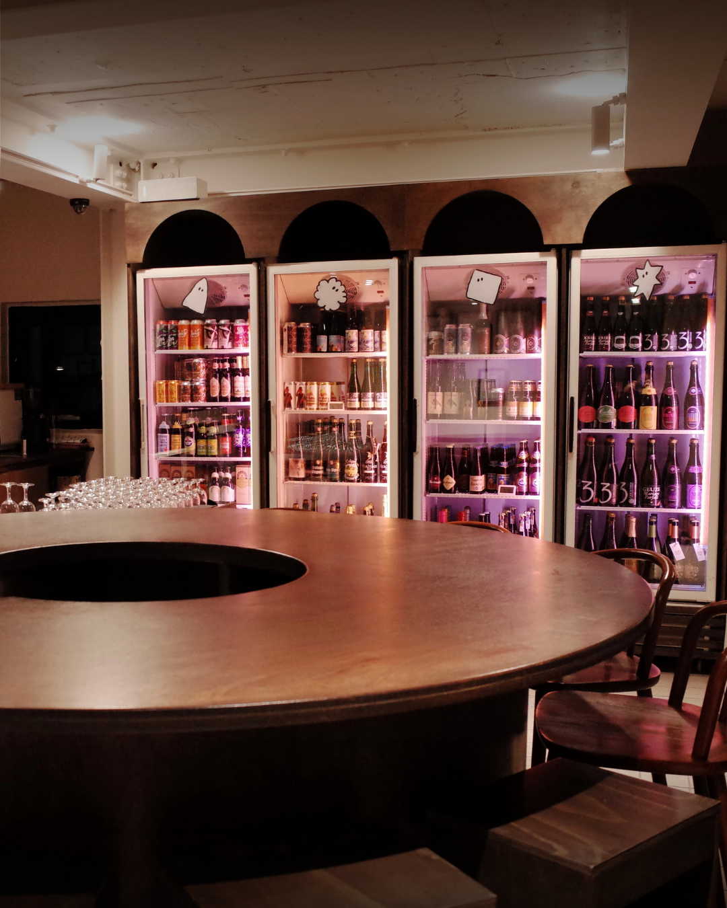
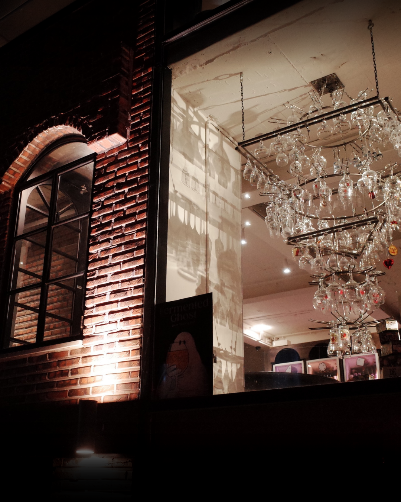
FERMENTED GHOST · SEASON 2
LEARNING · SENSING · CONNECTING
FROM CURATING BEER EXPERIENCES TO BUILDING BEER CULTURE
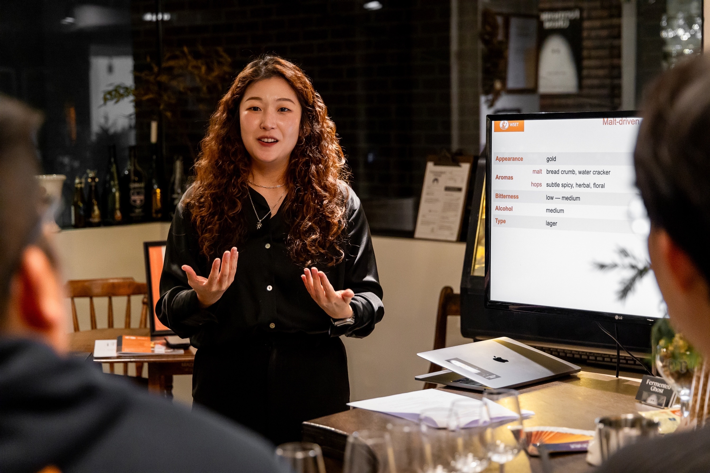
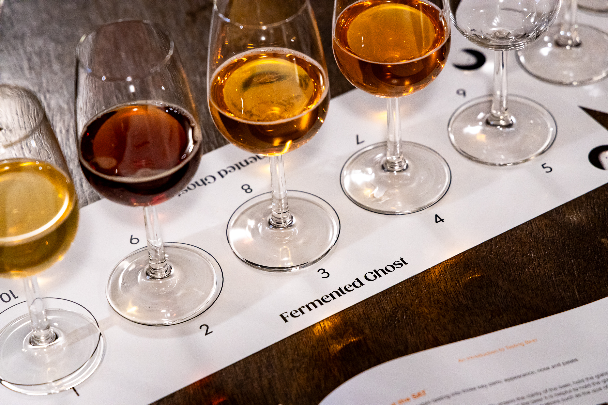
TASTING LENS
마십니다.
마시기 전에, 5초만.
색 · 투명도 · 거품
어떤 향이 떠오르는가
단맛 · 쓴맛 · 산미 · 풍미
탄산 · 바디 · 여운
TODAY’S TASTING BOARD
오늘의 테이스팅 보드오늘은 A와 B를 세 번 비교합니다.
세 번의 비교, 같은 질문.
TASTING MINDSET
테이스팅의 태도B가 A보다 향이 더 강하게 느껴진다.
원료나 만드는 방식의 차이일 수 있다.
나는 A가 더 좋다.
BEER SPECTRUM
맥주의 맛은 어디에서 올까요?
두 잔씩 맛보며, 하나씩 찾아갑니다.
PAIR 1 · TASTE
먼저, 마셔봅니다.
마시기 전에, 5초만.LOOK · SMELL · TASTE · FEEL & FINISH
PAIR 1 · DESCRIBE
색 · 투명도
향
단맛 · 쓴맛 · 산미
바디 · 탄산 · 여운
PAIR 1 · REVEAL
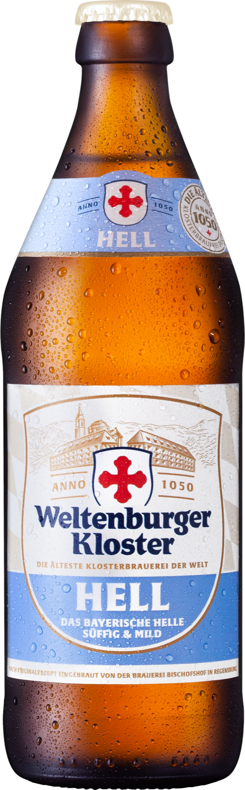
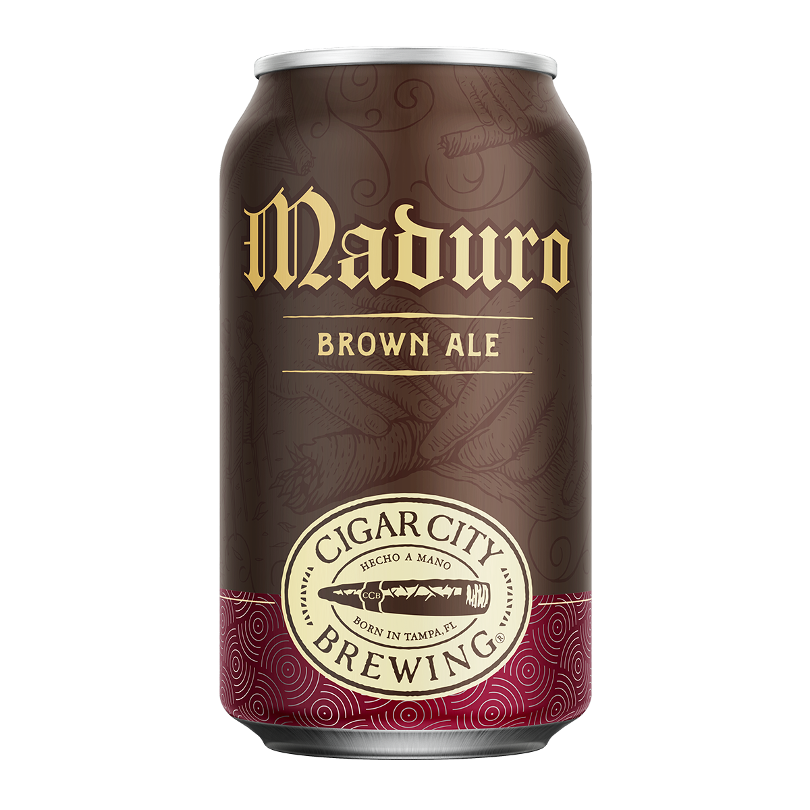
TRACE THE FLAVOUR · 01
두 맥주의 모든 차이가 몰트 때문이라는 뜻은 아닙니다.
PAIR 1 · TOUCH
BASE MALT기본 맥아
ROASTED SPECIALTY MALT로스팅 특수 맥아
두 몰트에서 가장 크게 다른 점은 무엇인가요?
어느 쪽은 빵 · 비스킷 · 견과에 가깝고,
어느 쪽은 로스팅 · 코코아 · 커피에 가까운가요?
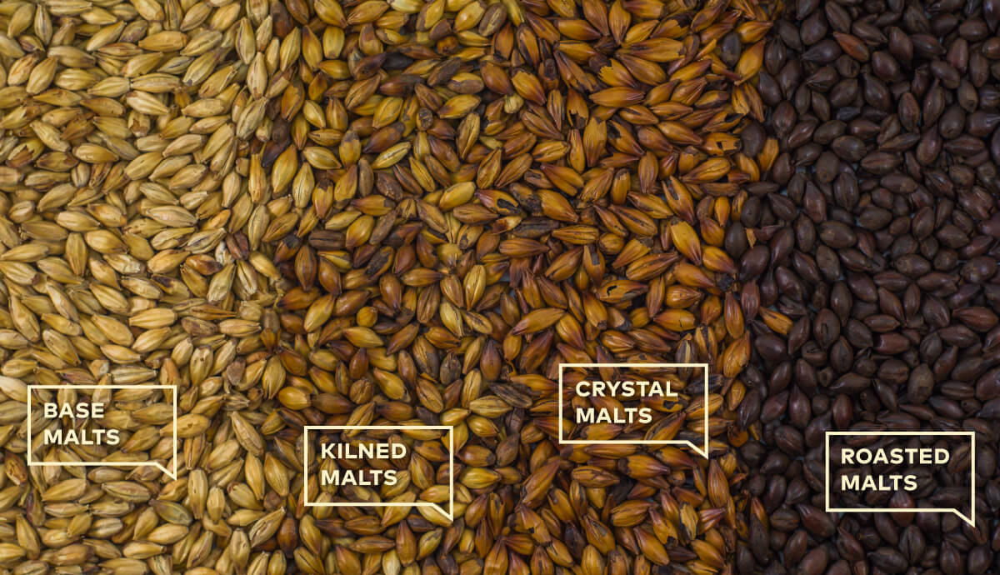
가열 방식과 정도에 따라 맥아의 색과 풍미 방향이 달라집니다.
PAIR 1 · MAP
그런데 맥주의 맛을 만드는 목소리는 이것 하나뿐일까요?
PAIR 2 · TASTE
두 번째 비교먼저, 마셔봅니다.
마시기 전에, 5초만.LOOK · SMELL · TASTE · FEEL & FINISH
PAIR 2 · DESCRIBE
차이를 말해봅니다OBSERVE FIRST먼저 관찰합니다.
색 · 투명도
향
단맛 · 쓴맛 · 산미
탄산 · 바디 · 여운
어느 잔은 허브와 꽃에 가깝고,
어느 잔은 자몽과 솔에 가까운가요?
PAIR 2 · REVEAL
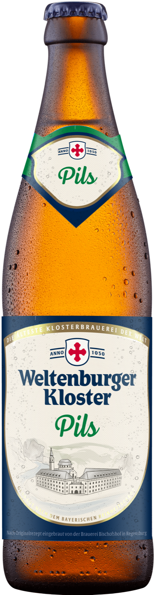
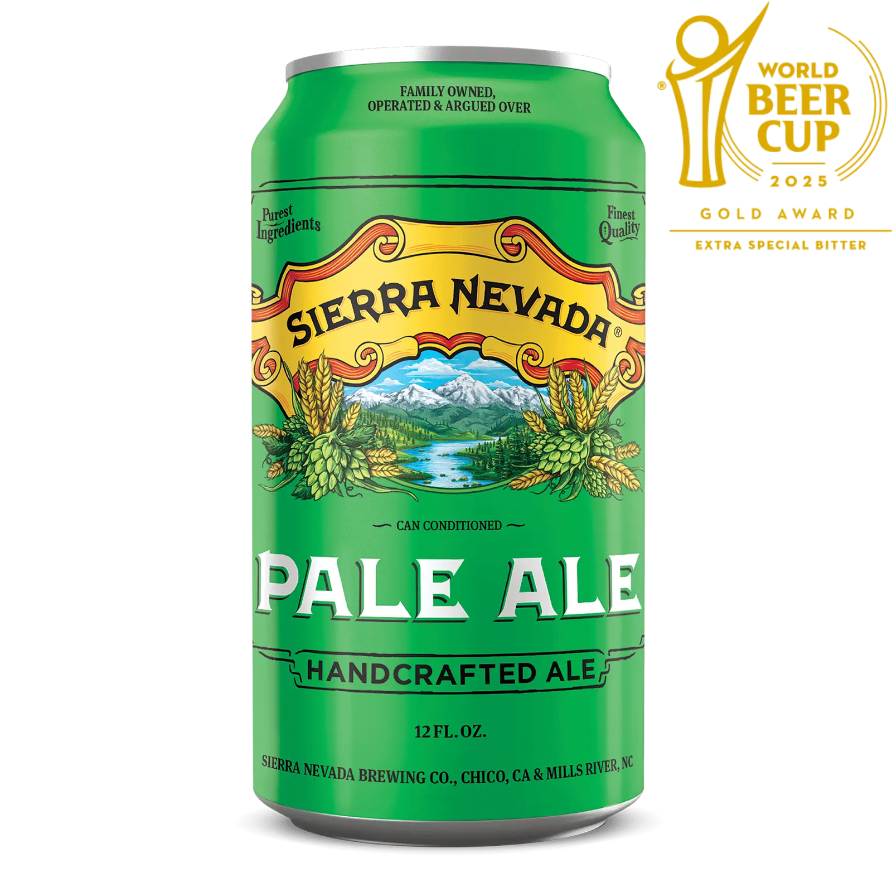
TRACE THE FLAVOUR · 02
맛의 출처를 추적합니다홉은 맥주에서 무슨 일을 할까요?
방금 두 맥주의 모든 차이가 홉 때문이라는 뜻은 아닙니다. 이번에는 그중 가장 크게 들리는 두 번째 목소리를 따라갑니다.
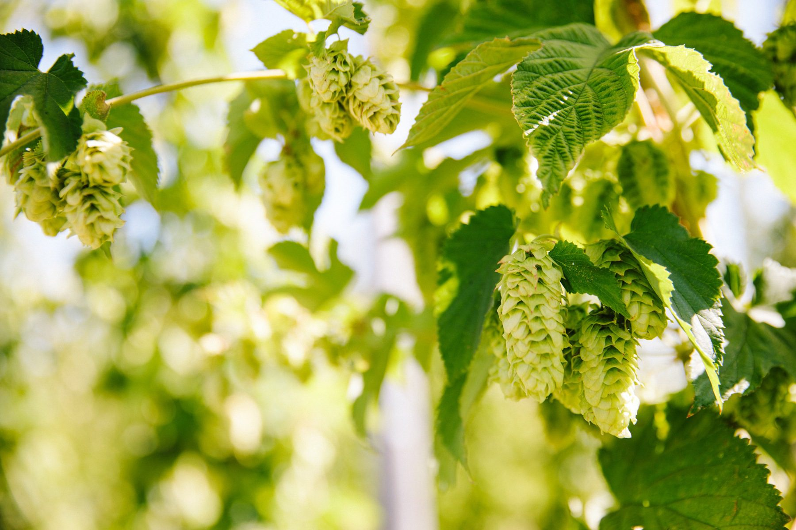
양조에는 주로 이 콘 형태의 꽃 부분을 사용합니다.
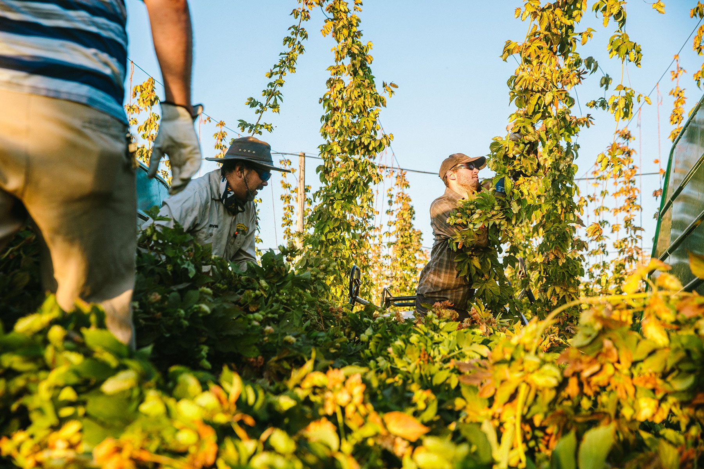
홉은 맥주에서 세 가지 중요한 일을 합니다.
향을 더합니다.
쓴맛을 더합니다.
일부 미생물의 성장을 억제해 보존성에 기여합니다.
홉은 맥주에 향과 쓴맛을 더하고, 일부 미생물의 성장을 억제해 보존성을 높이는 데도 기여합니다.
그럼 같은 홉이라도 품종이 달라지면 향도 다를까요?
PAIR 2 · TOUCH
HERBAL · LIME · GRASSY허브 · 라임 · 풀
TANGERINE · TROPICAL · BERRY귤 · 열대과일 · 베리
두 홉의 향에서 가장 크게 다른 점은 무엇인가요?
어느 쪽은 허브 · 라임 · 풀에 가깝고,
어느 쪽은 귤 · 열대과일 · 베리에 가까운가요?
같은 홉이라도 품종에 따라 향의 방향은 크게 달라질 수 있습니다.
그럼 방금 맡은 두 향과, 조금 전 마신 두 맥주를 같은 지도에서 보면 어떨까요?
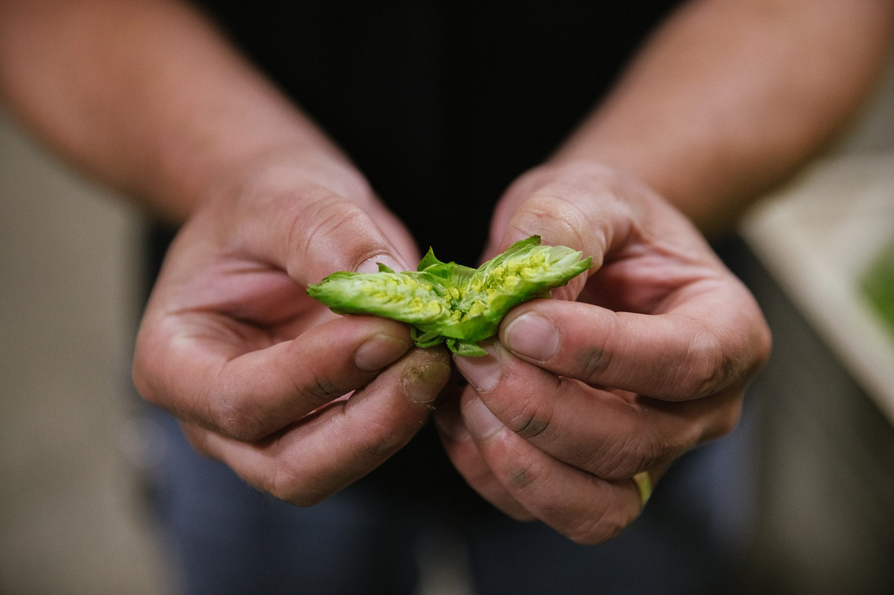
SENSORY REFERENCE · 맥주 레시피의 실제 원료 표시는 아닙니다.
PAIR 2 · MAP
같은 홉이라도 품종에 따라 향의 방향은 크게 달라질 수 있습니다.
그런데 다음 두 잔의 차이는 원료만으로 설명하기 조금 어려워집니다.
PAIR 3 · TASTE
마지막 비교먼저, 마셔봅니다.
마시기 전에, 5초만.LOOK · SMELL · TASTE · FEEL & FINISH
PAIR 3 · DESCRIBE
차이를 말해봅니다OBSERVE FIRST먼저 관찰합니다.
색 · 투명도
향
단맛 · 쓴맛 · 산미
탄산 · 바디 · 여운
01향에서 가장 먼저 떠오른 것은 무엇인가요?
02맛에서 두 잔을 가장 크게 가르는 것은 무엇인가요?
03마신 뒤 남는 느낌은 어떻게 다른가요?
04두 잔에 각각 한 단어씩 붙인다면?
PAIR 3 · REVEAL
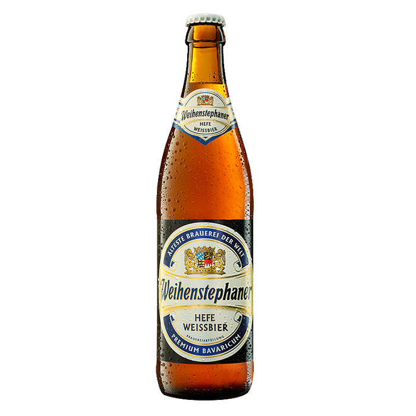
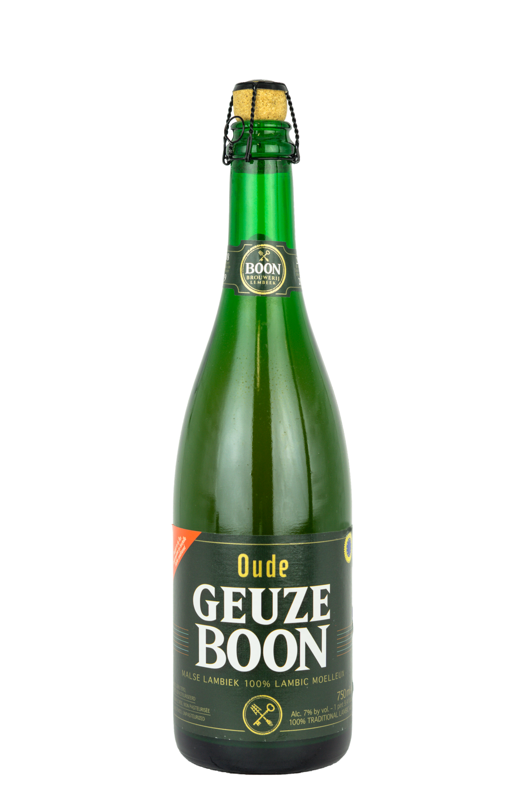
그런데 이 둘은 왜 이렇게까지 다를까요?
TRACE THE FLAVOUR · 03
맛의 출처를 추적합니다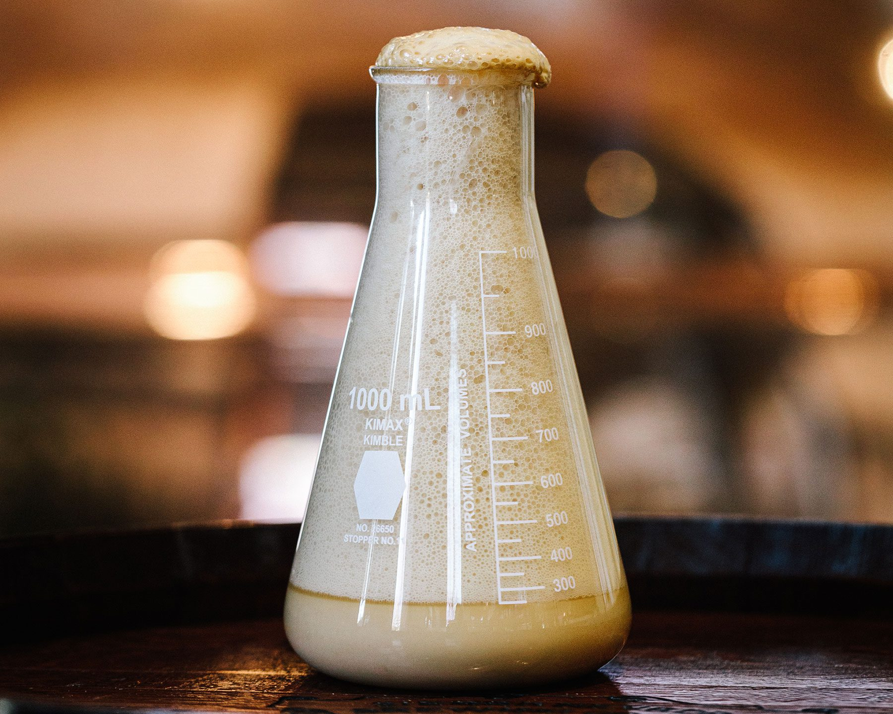
당 + 효모 → 알코올 + 탄산 (+ 새로운 향)
SUGAR + YEAST → ALCOHOL + CO₂ (+ NEW AROMAS)효모와 다른 미생물이 당을 바꾸는 동안 알코올과 탄산뿐 아니라 다양한 향과 맛도 함께 만들어집니다.
발효는 알코올만 만드는 과정이 아닙니다.
맥주의 향과 개성을 만들어냅니다.
FERMENTATION · TWO PATHS
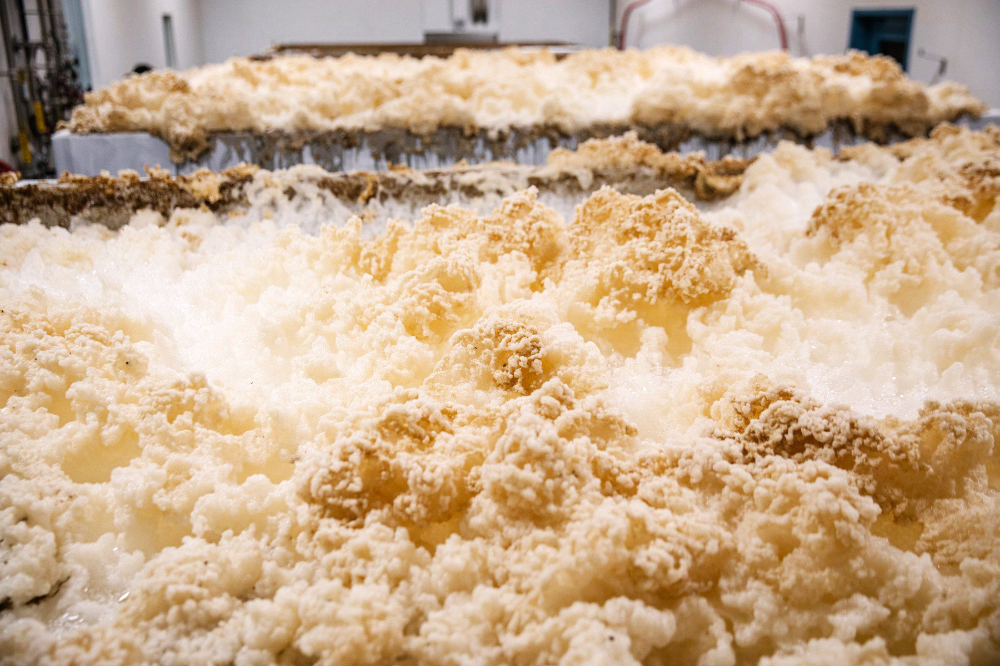
양조자가 선택한 효모를 넣어 발효를 시작합니다.
WEIHENSTEPHANER HEFEWEISSBIER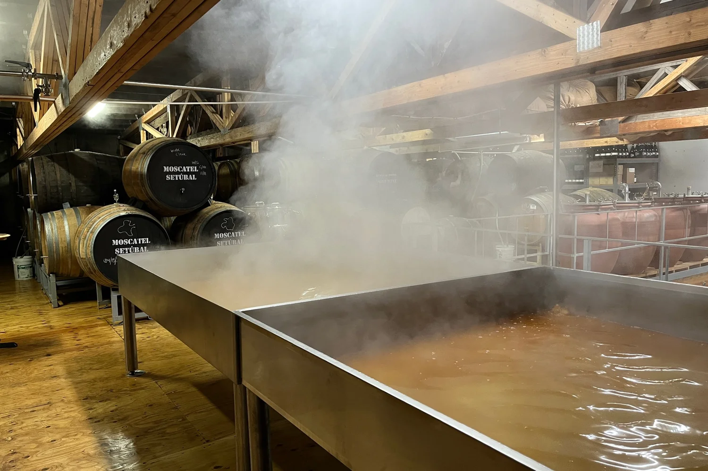
식힌 맥즙이 양조장 환경의 다양한 효모와 박테리아를 만나 발효를 시작합니다.
OUDE GEUZE BOON여러 효모와 박테리아가 시간에 따라 관여하는 자연 유입 혼합 발효입니다.누가 발효하느냐, 어떻게 발효를 시작하느냐에 따라 맥주의 향과 개성이 크게 달라질 수 있습니다.
PUTTING IT TOGETHER
당 · 색 · 곡물 풍미
쓴맛 · 향 · 보존성
발효 · 알코올 · 탄산 · 새로운 향
맥주의 대부분을 이루는 바탕
그럼 이 원료들이 실제로 한 잔의 맥주가 되는 순서를 아주 크게만 한번 볼까요?
BREWING PROCESS
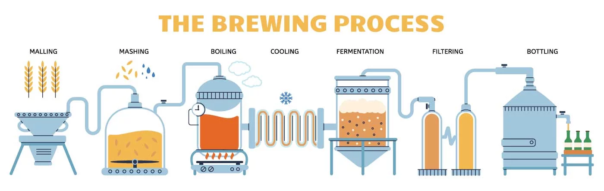
곡물에서 맥주의 출발점을 준비합니다.
맥아의 성분을 물에 풀어 발효할 수 있는 맥즙을 만듭니다.
맥즙을 끓이고 홉으로 쓴맛과 향의 방향을 더합니다.
효모가 일할 수 있도록 빠르게 식힙니다.
효모가 당을 알코올 · CO₂ · 새로운 향으로 바꿉니다.
맛을 정돈한 뒤 병 · 캔 · 케그 등에 담습니다.
맥아추출물(DME)을 사용하기 때문에 제맥과 당화의 복잡한 앞단은 건너뛰고, 맥즙을 만들고 끓이는 단계부터 직접 경험합니다.
같은 기본 공정을 거치더라도, 무엇을 선택하느냐에 따라 서로 다른 맥주가 만들어집니다.
NEXT WEEK · SESSION 02
FRUITY · SPICY과일 · 향신료
CITRUS · AROMATIC시트러스 · 향긋함
TOASTY · NUTTY토스트 · 견과
FERMENTATION-LED · HOP-LED · MALT-LED는 다른 원료가 중요하지 않다는 뜻이 아니라, 각 팀이 특히 관찰할 주요 감각 축입니다.
오늘은 맥주의 맛이 어디에서 오는지 찾아봤습니다.